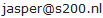

De WebDRIP Designer is een webgebaseerde ontwerptool voor DRIP-teksten. Er is ondersteuning voor de meest voorkomende typen beeldstanden met een pictogram en een of meerdere tekstregels, welke voldoen aan de "Richtlijn informatievoorziening op dynamische informatiepanelen" van het CROW (artikelnummer D1073). De functionaliteit is gebaseerd op de BermDRIP Designer van Rijkswaterstaat en kent vele nieuwe mogelijkheden.
De WebDRIP Designer is op 3 augustus 2013 als proof-of-concept ontwikkeld door Jasper Vries. Er is een volledig nieuwe webapplicatie gebouwd die gebruikt maakt van moderne webtechnieken. Sinds de eerste versie zijn er regelmatig updates geweest met nieuwe functionaliteiten. Op 1 april 2016 is de WebDRIP Designer vrijgegeven als open source software onder de GNU GPL licentie. De broncode is verkrijgbaar op Bitbucket.
Nieuwe functies ten opzichte van de BermDRIP Designer
Niet overgenomen van de BermDRIP Designer
De WebDRIP Designer wordt geleverd zoals deze is, zonder enige vorm van garantie. In geen enkel geval is de auteur of rechthebbende aansprakelijk voor enige schade, in welke vorm dan ook, die zou kunnen voortvoeien uit het gebruik van de WebDRIP Designer.
Stuur bij vragen of opmerkingen over de WebDRIP Designer een e-mail naar .
Dit adres kan ook gebruikt worden voor verzoeken om bijvoorbeeld nieuwe pictogrammen, regelsymbolen of templates toe te laten voegen.